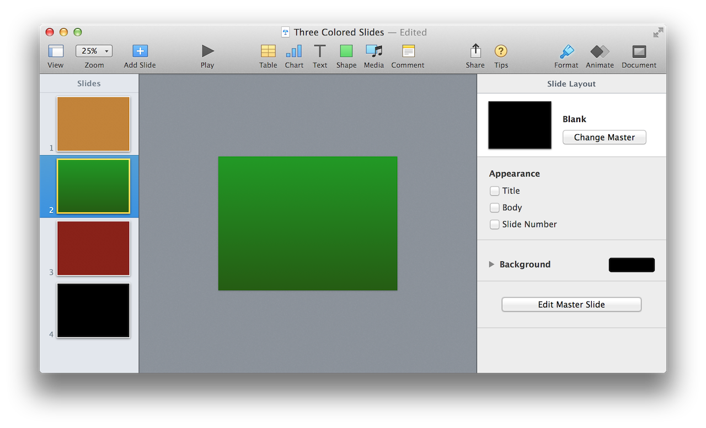
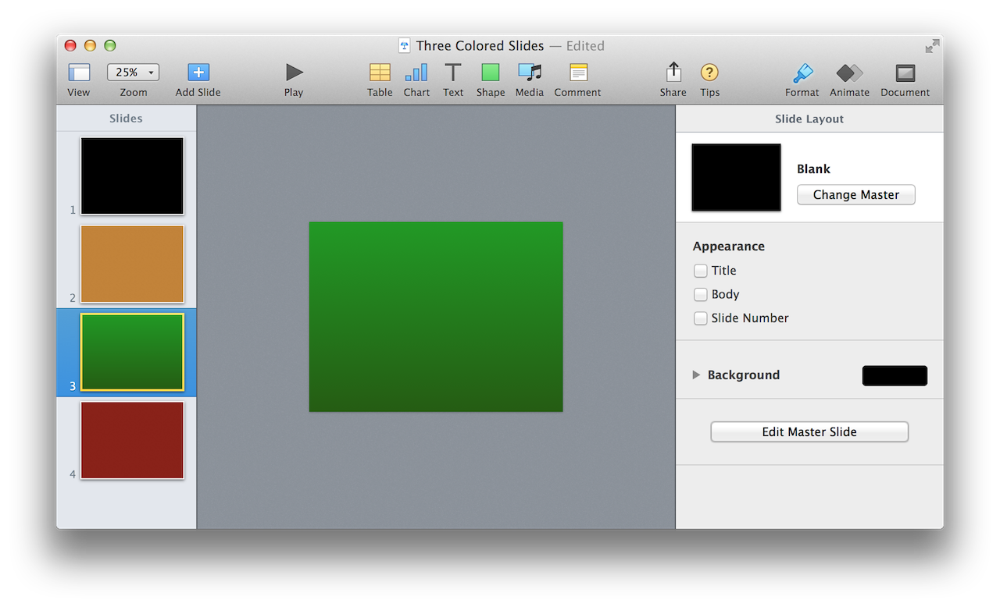
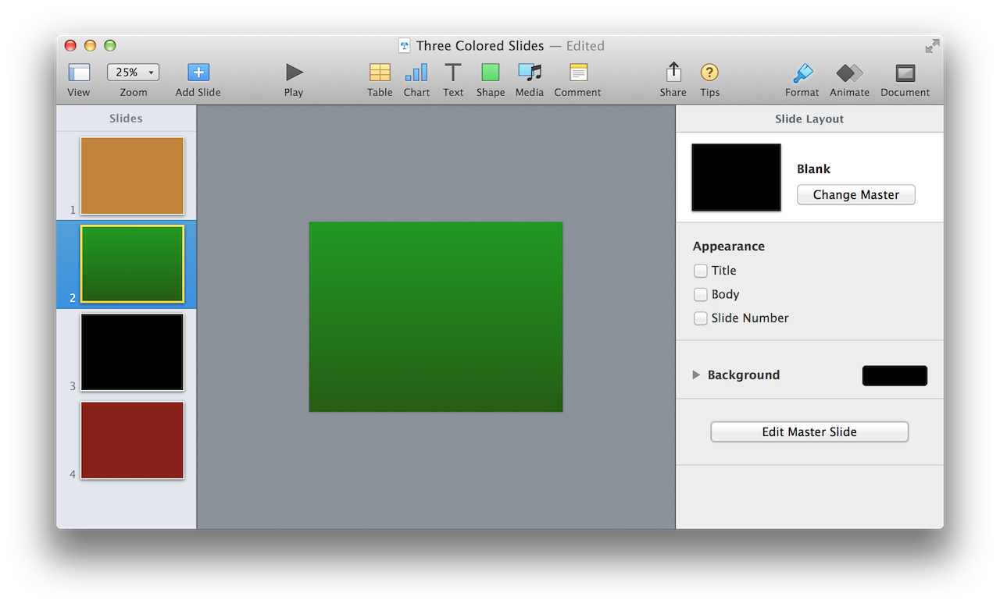
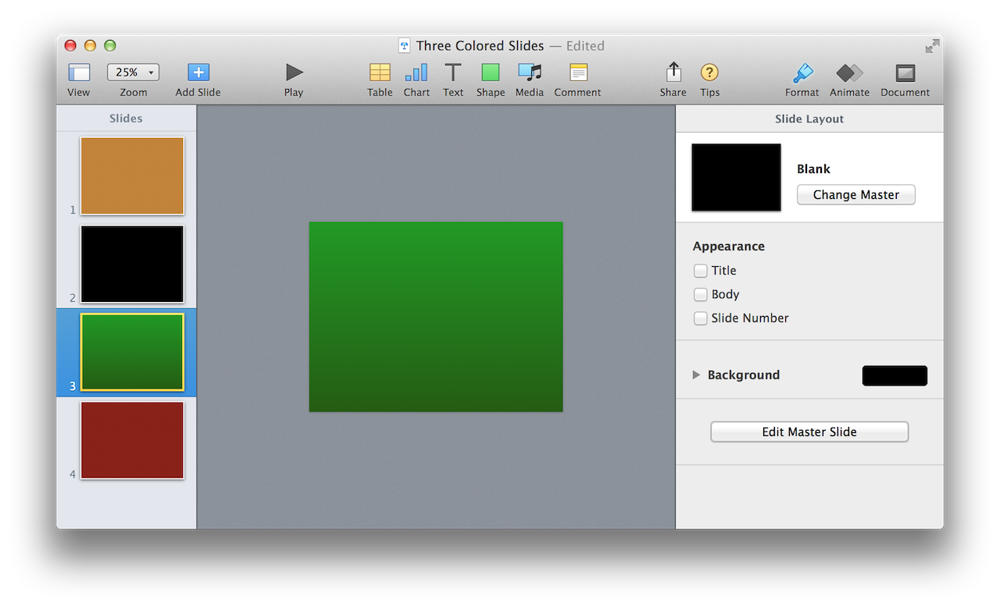

When it comes to automation and presentations, the creation of slides will be one of the things that’s done most often. AppleScript scripts can be used to easily create and populate presentations, creating slides as needed.
Slides are created using the make command from the Standard Suite of the Keynote dictionary. Use of the make command is covered in detail on the pages of this topic group (linked on the right), beginning with demonstrating how to create new slides at specific locations of a presentation.
The other pages of this topic section cover: how to apply master pages to slides; how to set the text of a slide’s default text items; how to apply transitions to slides; how to hide and delete slides in a presentation; and how to work with presenter notes.
The following example scripts are shown addressing this small example presentation (DOWNLOAD):
Let’s begin with a basic script showing how to create a slide:
The simple way to add a slide to a presentation is to use the make command, as shown in the following script. Note that the newly created slide will be added to the end of presentation.
| Make New Slide | ||
| 01 | tell application "Keynote" | |
| 02 | activate | |
| 03 | if not (exists document 1) then error number -128 | |
| 04 | tell front document | |
| 05 | set the newSlide to make new slide | |
| 06 | end tell | |
| 07 | end tell | |
When the script is run, a new slide will be added at the end of the frontmost presentation document. (The black slide is the new slide) (⬇ see below )

(⬆ see above ) A new slide (in black) has been added to a presentation through the use of the make command.
NOTE: The make command usually returns a reference to the newly created item. In the script example above, the reference to the newly created slide is stored in the variable newSlide for possible use later in the script.
Another common practice when creating slides is to insert the new slide at a specific place in the slideshow, such as the beginning or end of the presentation. This is accomplished by using the optional at parameter with the make command.
To insert a slide, include the at parameter in the command statement, followed by a reference to the target location in the presentation, which in this case, is the beginning of the slides:
When the script is run, a new slide will be added at the beginning of the frontmost presentation document. (The black slide is the new slide) (⬇ see below )

(⬆ see above ) A new slide (in black) has been inserted into a presentation at a specific location, through the use of the positional at parameter.
Slides can be inserted at the end of a presentation, by using the same technique as shown in the example above. Simply include the optional positional parameter at, followed by a reference to the target insertion location (the end of the slides): (⬇ see below )
When the script is run, a new slide will be added at the end of the frontmost presentation document. (The black slide is the new slide) (⬇ see below )
(⬆ see above ) A new slide (in black) has been inserted into a presentation at a specific location, through the use of the positional at parameter.
Some scripts are designed to perform their magic based upon the current user selection in a document. This example demonstrates how a script inserts a slide after the slide currently selected by the user.
The current slide property of the document class will provide the script with the location reference necessary to place the new slide at the desired location.
First, get and store (in a variable) the value of the current slide document property. Next, use the reference stored in the variable as the value for the positional at parameter, as show below: (⬇ see below )
When the script is run, a new slide will be added after the current slide of the frontmost presentation document. (The black slide is the new slide) (⬇ see below )

(⬆ see above ) A new slide (in black) has been inserted into a presentation at a specific location, through the use of the current slide document property and the positional at parameter.
This example is the same as the previous example, with the exception that the new slide is inserted before the current slide.
When the script is run, a new slide will be added before the current slide of the frontmost presentation document. (The black slide is the new slide) (⬇ see below )

(⬆ see above ) A new slide (in black) has been inserted into a presentation at a specific location, through the use of the current slide document property and the positional at parameter.
Here are some more slide insertion examples using variations of the positional reference syntax: